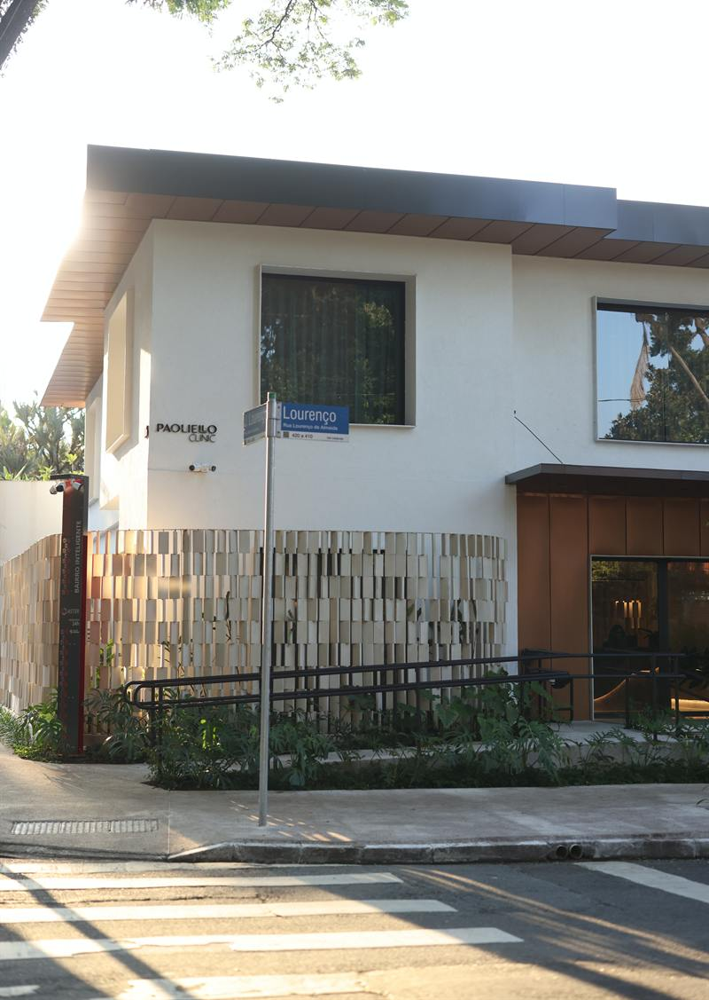
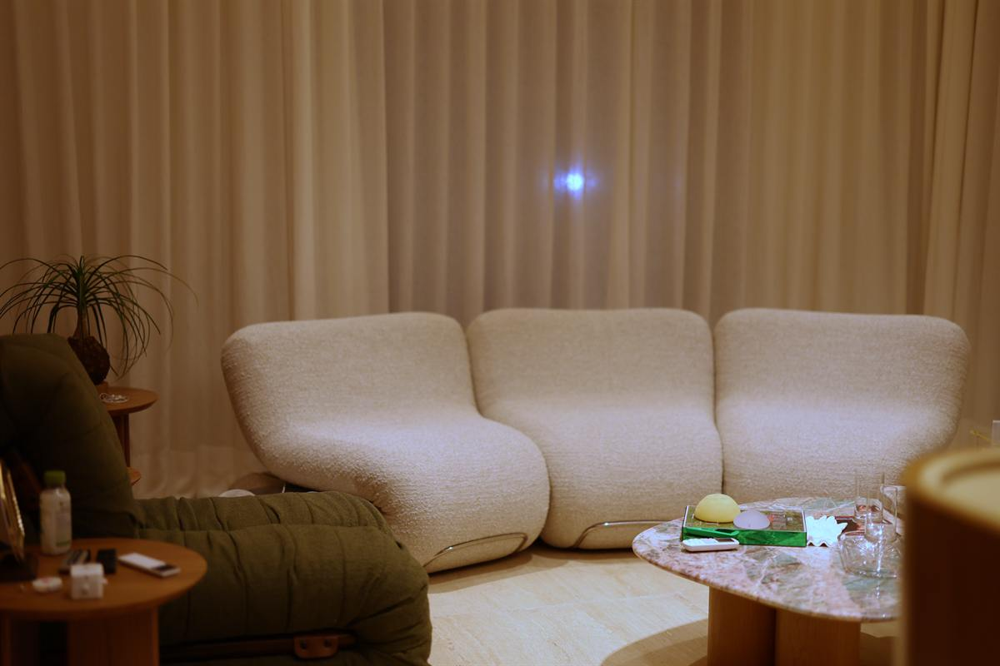
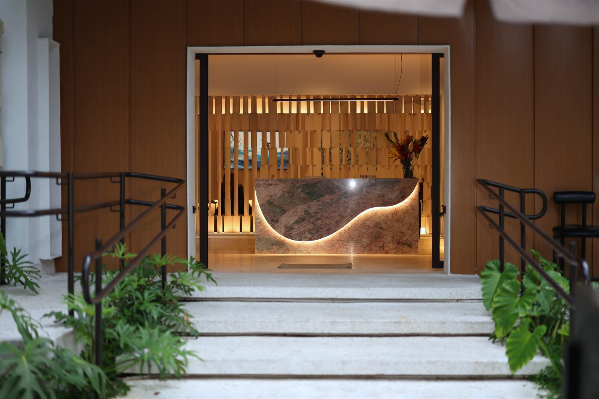

Pacientes de fora
Sua vinda a São Paulo, planejada antes mesmo de você chegar.
Conte onde você está e o que motivou a busca. A partir daí, a clínica organiza a primeira consulta, o hospital e o tempo de estada, para que a viagem já saia com destino certo.
Como funciona
Em seis passos.
Contato inicial
Pelo WhatsApp ou telefone, em português ou inglês. Conte de onde fala, qual especialidade procura e, se quiser, envie exames recentes. A equipe responde com as opções de data e o formato da primeira consulta.
Primeira consulta: presencial ou online
A primeira consulta pode ser presencial, em São Paulo, ou online, por videochamada, quando o caso permite avaliação à distância. Nela o médico examina ou orienta, diz se há indicação e se vale a pena viajar, e quando.
Exames e planejamento
Com a indicação definida, a clínica organiza a lista de exames, que podem ser feitos na cidade de origem ou em São Paulo, e monta o calendário: chegada, consulta presencial, cirurgia ou procedimento e retornos, em datas próximas.
Consulta presencial e cirurgia
Quem começou online tem a consulta presencial logo na chegada, para exame e confirmação do plano. As cirurgias acontecem no Hospital Vila Nova Star, com a equipe da clínica; os procedimentos dermatológicos, na própria clínica.
Permanência em São Paulo
O tempo de permanência é definido caso a caso, conforme o procedimento e a recuperação prevista. A clínica indica hospedagem próxima e orienta sobre transporte e acompanhante quando o procedimento exige.
Acompanhamento
Os retornos presenciais são concentrados no período em que o paciente está na cidade. Depois, o acompanhamento continua à distância, por videochamada e WhatsApp, quando o caso permite, com a mesma equipe.
Comunicação
Idioma e contato
- Atendimento em português e em inglês
- Contato por WhatsApp em horário comercial de São Paulo (GMT-3)
- Videochamada para a avaliação inicial e para retornos, quando indicado


Estadia
Hospedagem e logística
- A clínica fica em Vila Nova Conceição, bairro residencial com hotéis e serviços a poucos minutos
- Indicações de hospedagem mediante contato
- Orientações sobre transporte, acompanhante e repouso conforme o procedimento
- Exames e retornos concentrados em poucos dias, para reduzir deslocamentos

Agendar
Comece pelo contato. O planejamento vem depois.
Diga de onde fala e o que procura. A equipe responde com o formato da primeira consulta e as próximas datas.